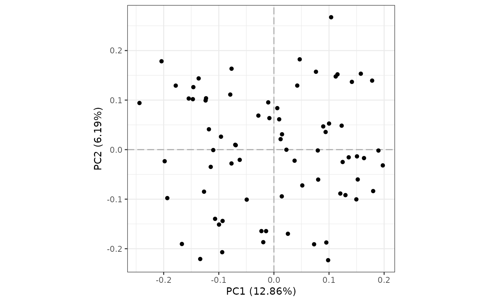
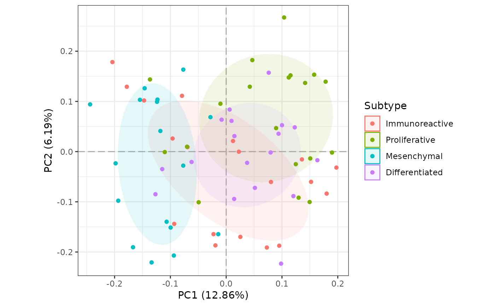
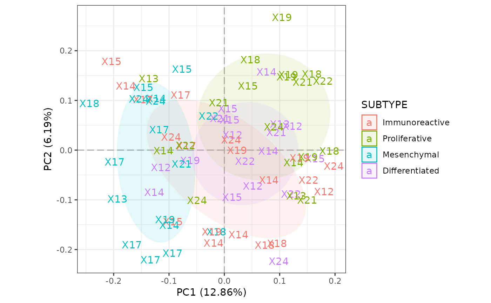
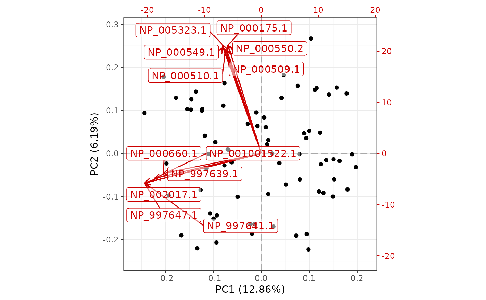

plot_pca.RdA convenience function for plotting PCA scatter plot for samples in
ExpressionSet/MSnSet object. The biplot is essentially the ggplot version of
biplot.prcomp.
eset (or most likely eset subclass) object.
NULL or string; one of colnames(pData(eset)).
This is used to color the points or labels, if label is not
NULL. Default is NULL, which colors all points or labels
black.
NULL or string; one of colnames(pData(eset)). If a
string is provided, labels will be used instead of points.
logical; whether to convert values to Z-Scores by sample.
Default is TRUE.
logical; whether to show the confidence ellipses if
phenotype is not NULL.
numeric; a vector of length two specifying the principal
components to plot. Default is c(1, 2), which plots PC1 on the
x-axis and PC2 on the y-axis. Order matters.
logical; whether to display the biplot.
NULL or string; the name of a column in
fData(eset) used to label the biplot features. If NULL
(default), featureNames(eset) is used.
logical; if TRUE (default), the feature loadings
and scores are scaled in opposite directions by the standard deviations of
the principal components. This will produce a biplot similar to
biplot.prcomp. If FALSE, the result will be
similar to biplot.default.
numeric; the number of most influential features from
each principal component to label. Default is 6.
logical; whether to include samples with missing phenotype
information. Default is TRUE.
string; title of the plot legend. Defaults to
phenodata.
a list of arguments passed to
geom_segment to modify the biplot arrows.
a list of arguments passed to
geom_label_repel to modify the biplot labels.
additional arguments passed to geom_point
or geom_text, such as size and pch.
A ggplot object
library(MSnSet.utils)
data(cptac_oca)
# Default plot
plot_pca(oca.set)
#> Subsetting to 4738 complete rows for PCA.

# Color by SUBTYPE with custom legend title
plot_pca(oca.set, "SUBTYPE", legend_title = "Subtype")
#> Subsetting to 4738 complete rows for PCA.

# Color by SUBTYPE and label by Batch
plot_pca(oca.set, phenotype = "SUBTYPE", label = "Batch")
#> Subsetting to 4738 complete rows for PCA.

# Biplot
plot_pca(oca.set, biplot = TRUE)
#> Subsetting to 4738 complete rows for PCA.
